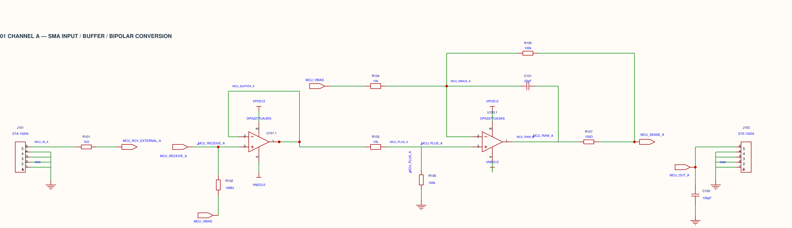

2026-10-13 · 기존 DAC8562 module 프로젝트의 DAC_MCU 페이지
연결되는 것이 맞습니다. MCU_RECEIVE_A 전체가 끊긴 것이 아니라, R102의 윗핀 분기만 그 네트와 미연결이었습니다. MCU_RECEIVE_A → R102(10MΩ) → MCU_VBIAS가 맞는 경로입니다. 이번에 일반 와이어의 실제 T접속으로 합쳤고 빨간 접속점이 표시됩니다. 입력이 부동이 되는 것을 완화하는 약한 바이어스 경로이며, 정밀한 탈선 시 0V 출력 보증을 의미하지는 않습니다.
저장→닫기→재열기 후 두 페이지 ERC 경고·오류 0건. 프로젝트 export에도 연결이 보존됩니다. R102.1 외 다른 핀 네트, 부품 값/속성 및 PCB 동박은 변경하지 않았습니다.

Native 수정본 · 프로젝트 export · 검증 데이터
시뮬레이터는 매 시간점에서 전압·전류 방정식을 반복 계산합니다. 7건은 전원이 내려가는 종료 구간 약 180.758ms/250.758ms에서 계산 간격을 계속 줄이다 Timestep too small로 중단됐습니다. 브라운아웃 시나리오 1건도 실패 지점은 앞의 순간 저하가 아니라 마지막 종료 구간입니다.
로그와 모델의 UVLO/enable IF 전환에 비춰 모델의 급격한 모드 전환과 수치 수렴 문제가 유력합니다. 이는 추정이며 특정 원인의 확정은 아닙니다. 모델·계산 알고리즘·설정 때문에 계산이 멈출 수 있다는 설명은 ROHM의 SPICE 기술 문서에도 나옵니다.
그러므로 “이것 때문에 보드가 작동하지 않는다”는 뜻이 아닙니다. 기동 전용 24건은 모델의 전압 범위 선별을 통과했습니다. 반대로, 계산이 중단된 7건의 종료 동작이 정상이라는 보증도 할 수 없습니다. 전원 종료 시 출력 튐/뮤트 지연 여부는 별도 검증 대상입니다. R102의 실제 도면 미연결과 SPICE 계산 중단은 서로 별개의 문제입니다.
이전 제작 전 검토 기록 · 작업 전 SQLite 및 live export 백업은 backups에 별도로 보관했습니다.